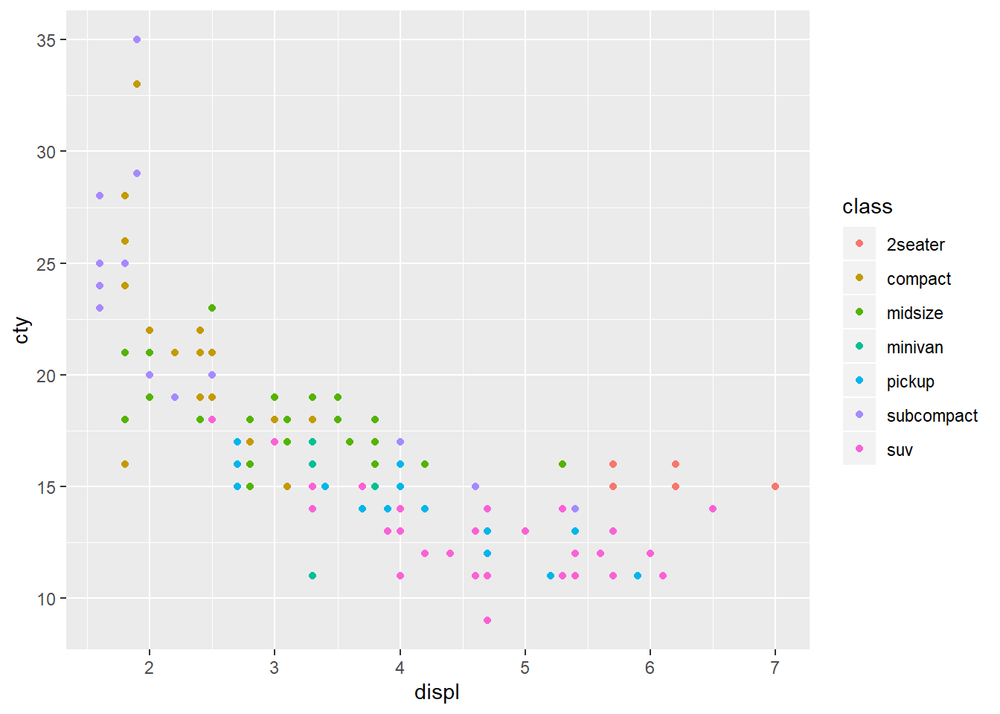
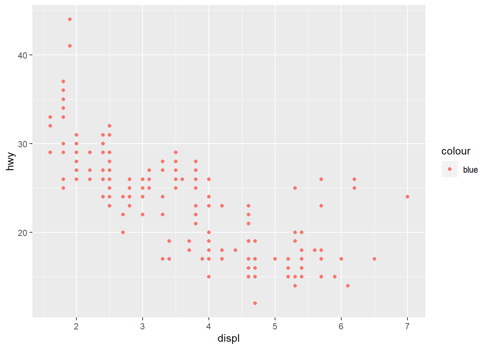
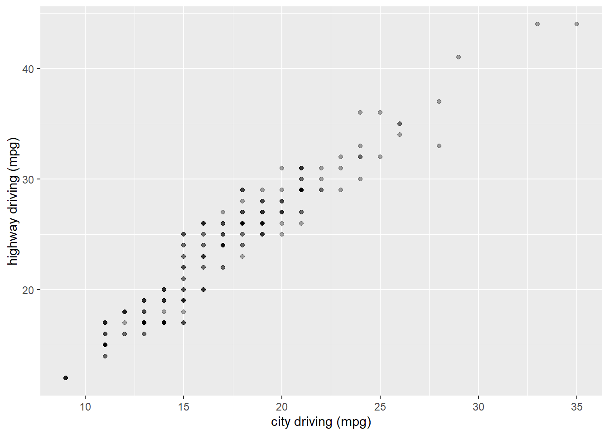
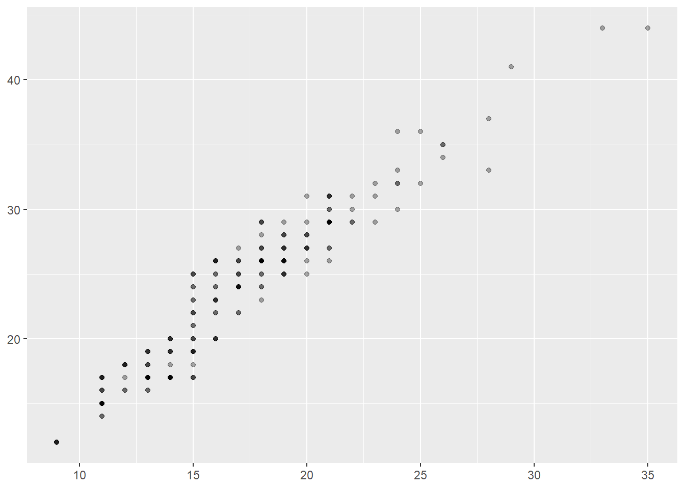

Day 1
This is the self-study of ggplot2 book by myself. All this material are from the book of ggplot2.
# Loading the package of ggplot2
library(ggplot2)# Read the data set 'mpg'
mpg## # A tibble: 234 x 11
## manufacturer model displ year cyl trans drv cty hwy fl class
## <chr> <chr> <dbl> <int> <int> <chr> <chr> <int> <int> <chr> <chr>
## 1 audi a4 1.8 1999 4 auto(l… f 18 29 p comp…
## 2 audi a4 1.8 1999 4 manual… f 21 29 p comp…
## 3 audi a4 2 2008 4 manual… f 20 31 p comp…
## 4 audi a4 2 2008 4 auto(a… f 21 30 p comp…
## 5 audi a4 2.8 1999 6 auto(l… f 16 26 p comp…
## 6 audi a4 2.8 1999 6 manual… f 18 26 p comp…
## 7 audi a4 3.1 2008 6 auto(a… f 18 27 p comp…
## 8 audi a4 quat… 1.8 1999 4 manual… 4 18 26 p comp…
## 9 audi a4 quat… 1.8 1999 4 auto(l… 4 16 25 p comp…
## 10 audi a4 quat… 2 2008 4 manual… 4 20 28 p comp…
## # … with 224 more rowsAccording to the book, every ggplot2 plot has three key components:
data
A set of aesthetic mappings between variables in the data and visual properties, and
At least one layer which describes how to render each observation. Layers are usually created with a geom function.
Here is the book example:
ggplot(mpg, aes(x = displ, y = hwy)) + geom_point()
This example plot shows that
Data: mpg
Aesthetic mapping: engine size mapped to x position, fuel economy to y position
Layer: points
Below is the exercises problem from the book.
ggplot(mpg, aes(cty, hwy)) + geom_point()
ggplot(diamonds, aes(carat, price)) + geom_point()
ggplot(economics, aes(date, unemploy)) + geom_line()
ggplot(mpg, aes(cty)) + geom_histogram()
There is a way that we could map the class variable to colour:
ggplot(mpg, aes(displ, cty, colour = class)) + geom_point()
This gives each point a unique colour corresponding to its class. If you want to set an aesthetic to a fixed value, without scaling it, we can use aes(). Different types of aesthetic attributes work better with different types of variables.
ggplot(mpg, aes(displ, hwy)) + geom_point(aes(colour = "blue"))
ggplot(mpg, aes(displ, hwy)) + geom_point(colour = "blue")
Facetting
There are two types of facetting: grid and wrapped. Wrapped is the most useful one. To add a facetting, just add facet_wrap(), which takes the name of a variable preceded by ~.
ggplot(mpg, aes(displ, hwy)) + geom_point() + facet_wrap(~class)
Plot Geoms
*geom_smooth() fits a smoother to the data and displays the smooth and its standard error.
*geom_boxplot() produces a box-and-whisker plot to summarise the distribution of a set of points.
*geom_histogram() and geom_freqpoly() show the distribution of continuous variables.
*geom_bar() shows the distribution of categorical variables.
*geom_path() and geom_line() draw lines between the data points. A line plot is constrained to produce lines that travel from left to right, while paths can go in any direction. Lines are typically used to explore how things change over time.
Adding a Smoother to a Plot
If you have a scatterplot with a lot of noise, it is hard to see any pattern, then we can add a smoothed line to the plot with geom_smooth().
ggplot(mpg, aes(displ, hwy)) + geom_point() + geom_smooth()
We can turn off the confidence interval with geom_smooth(se = FALSE). An important argument to geom_smooth() is the method, which allows to choose which type of model is used to fit the smooth curve.
method = "loess", the default for smalln, uses a smooth local regression. The wiggliness of the line is controlled by thespanparameter, which ranges from 0 (exceedingly wiggly) to 1 (not so wiggly).
loess does not work well for large dataset, so an alternative smoothing algorithm is used when n is greater than 1000.
method = "gam"fits a generalised additive model provided by the mgcv package. We need to first load mgcv package and then use a formula likeformula = y ~ s(x)ory ~ s(x, bs = "cs")(for large data).method = "lm"fits a linear model, giving the line of best fit
ggplot(mpg, aes(displ, hwy)) + geom_point() + geom_smooth(method = "lm")
method = "rlm"works likelm(), but uses a robust fitting algorithms so that outliers don’t affect the fit as much. This is part of theMASSpackage, so needs to load first.
Modifying the Axes
xlab() and ylab() modify the x- and y- axis labels:
ggplot(mpg, aes(cty, hwy)) + geom_point(alpha = 1/ 3)
ggplot(mpg, aes(cty, hwy)) + geom_point(alpha = 1/ 3) + xlab("city driving (mpg)") + ylab("highway driving (mpg)")
# Remove the axis labels with NULL
ggplot(mpg, aes(cty, hwy)) + geom_point(alpha = 1/ 3) + xlab(NULL) + ylab(NULL)